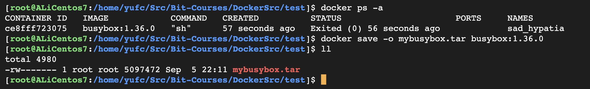
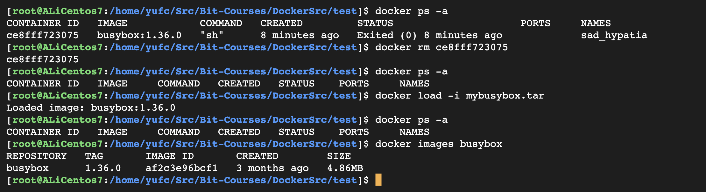
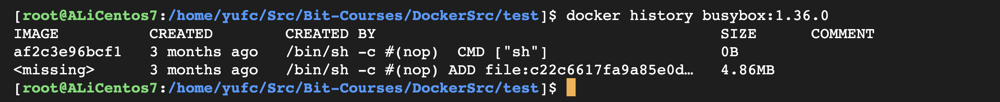
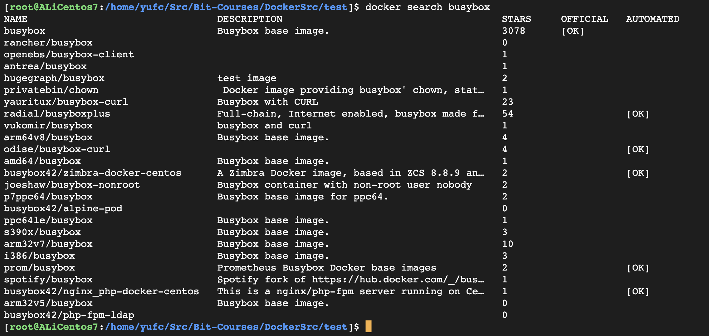
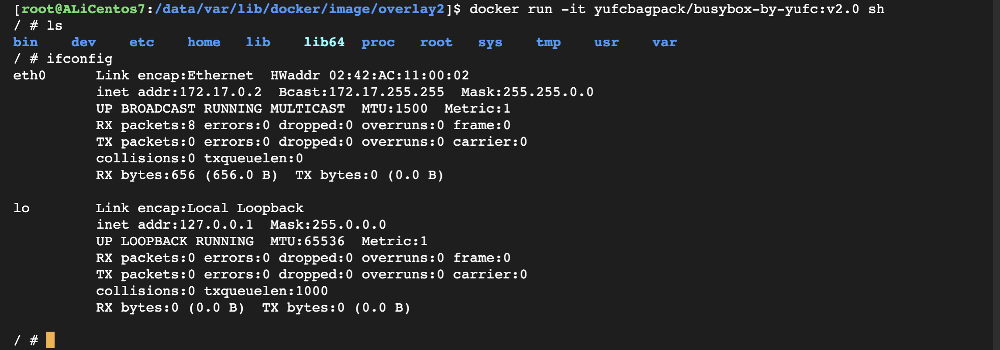
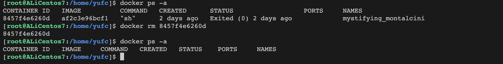
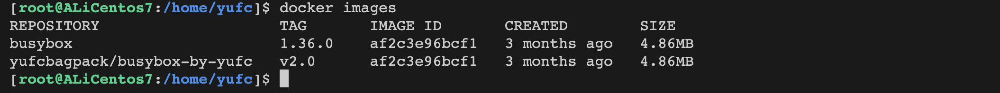
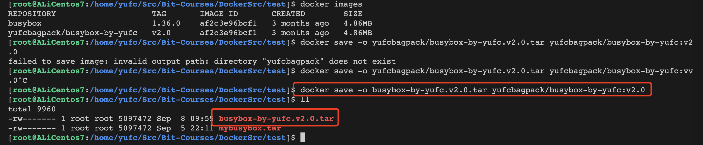
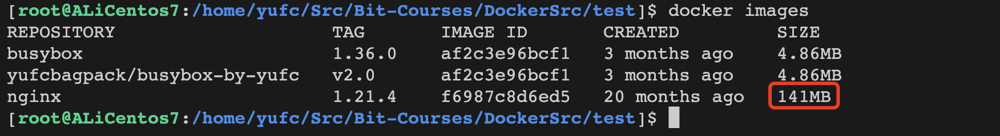
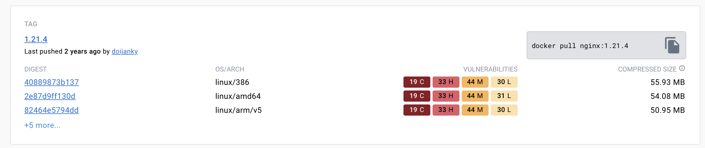

第五章-镜像
Docker镜像是什么
Docker image本质上是一个
read-only只读文件，这个文件包含了文件系统源码、库文件、依赖、工具等一些运行行application 所必须的文件。我们可以把 Docker image 理解成一个模板，可以通过这个模板实例化出来很多容器。
image 里面是一层层文件系统
Union FS。联合文件系统，可以将几层目录挂载到一起，形成一个虚拟文件系统。
每一层文件系统我们叫做一层 layer，联合文件系统可以对每一层文件系统设置三 种权限，只读(readonly)、读写(readwrite)和写出(whiteout-able)，但是 docker 镜像中每一层文件系统都是只读的。
构建镜像的时候，从一个最基本的操作系统开始，每个构建的操作都相当于做一层 的修改，增加了一层文件系统。一层层往上叠加，上层的修改会覆盖底层该位置的可见性，这也很容易理解，就像上层把底层遮住了一样。当你使用的时候，你只会看到 一个完全的整体，你不知道里面有几层，也不清楚每一层所做的修改是什么。
镜像命令详解
命令清单
| 命令 | 别名 | 功能 |
|---|---|---|
| docker images | docker image ls / docker image list | 列出本地镜像 |
| docker tag | docker image tag | 给镜像打标签， 可用于推送镜像仓库 |
| docker pull | docker image pull | 从镜像仓库拉取镜像 |
| docker push | docker image push | 推送镜像到仓库 |
| docker rmi | docker image rm / docker image remove | 删除本地镜像 |
| docker build | docker image build | 通过 dockerfile制作镜像 |
| docker save | docker image save | 将制定镜像保存成tar归档文件 |
| docker load | docker image load | 导入使用 docker save 导出的镜像 |
| docker image inspect | 查看镜像的详细信息 | |
| docker history | docker image history | 查看镜像历史 |
| docker import | docker image import | 从归档文件 docker export 中创建镜像 |
| docker image prune | 删除不使用的镜 像 |
在这一章，我们只详细介绍上面的部分命令，有一些我们会到特定的章节详细讲解。
docker rmi
删除本地某个镜像。
docker rmi [OPTIONS] IMAGE [IMAGE...]关键参数。
-f : 强制删除-no-prune : 不移除该镜像的过程镜像，默认移除docker save 和 docker load
docker save [OPTIONS] IMAGE [IMAGE...] # -o :输出到的文件docker save -o mybusybox.tar busybox:1.36.0 # 保存这个镜像文件
现在可以把这个镜像加载回来。
docker load [OPTIONS]关键参数
--input, -i : 指定导入的文件，代替 STDIN。--quiet, -q : 精简输出信息。
docker history
docker history [OPTIONS] IMAGE-H, --human : 大小和日期采用人容易读的格式展现--no-trunc : 显示全部信息，不要隔断;-q, --quiet : 只显示镜像 id 信息;
其他参数大家都可以尝试。
docker image prune
删除不使用的镜像。
xxxxxxxxxx-a, --all : 删除全部不使用的镜像;--filter filter : 指定过滤条件;-f, --force : 不提示是否删除;x[root@ALiCentos7:/home/yufc/Src/Bit-Courses/DockerSrc/test]$ docker imagesREPOSITORY TAG IMAGE ID CREATED SIZEnginx 1.24.0 bf09be6b0005 2 weeks ago 142MBnginx 1.25.2 eea7b3dcba7e 2 weeks ago 187MByufcbagpack/my-bit-nginx 1.25.2 eea7b3dcba7e 2 weeks ago 187MBbusybox 1.36.0 af2c3e96bcf1 3 months ago 4.86MByufcbagpack/busybox-by-yufc v1.0 af2c3e96bcf1 3 months ago 4.86MBcentos 7 eeb6ee3f44bd 23 months ago 204MBnginx 1.18.0-alpine 684dbf9f01f3 2 years ago 21.9MB[root@ALiCentos7:/home/yufc/Src/Bit-Courses/DockerSrc/test]$ docker image prune -aWARNING! This will remove all images without at least one container associated to them.Are you sure you want to continue? [y/N] yDeleted Images:untagged: busybox:1.36.0untagged: busybox@sha256:9e2bbca079387d7965c3a9cee6d0c53f4f4e63ff7637877a83c4c05f2a666112untagged: yufcbagpack/busybox-by-yufc:v1.0untagged: yufcbagpack/busybox-by-yufc@sha256:086417a48026173aaadca4ce43a1e4b385e8e62cc738ba79fc6637049674cac0deleted: sha256:af2c3e96bcf1a80da1d9b57ec0adc29f73f773a4a115344b7e06aec982157a33deleted: sha256:1f1d08b81bbe3cb8d730d2e163d6737b4352192712b1f1548720dc224f6cac06untagged: nginx:1.18.0-alpineuntagged: nginx@sha256:93baf2ec1bfefd04d29eb070900dd5d79b0f79863653453397e55a5b663a6cb1deleted: sha256:684dbf9f01f3250437d595669c7437c202573798ab34247d50338ff630e58b6adeleted: sha256:c2de14d9781a9624082602f51baa465d1904cf681e8209bec5e0a40054897f49deleted: sha256:6774274a318ea7dfe5fb9dd3fe1f625e463352ba889f6f9fb2222e4783bcd209deleted: sha256:485b3a00a3b7092170c9612a95637ee7e1ff6b6bdc915c5131eb07983d02171ddeleted: sha256:c5ddcad13e93c4e6d6cf10c03bf14f0a8fc8a2a5435b87e300394fbc9977a02cdeleted: sha256:9a5d14f9f5503e55088666beef7e85a8d9625d4fa7418e2fe269e9c54bcb853cuntagged: nginx:1.25.2untagged: nginx@sha256:104c7c5c54f2685f0f46f3be607ce60da7085da3eaa5ad22d3d9f01594295e9cuntagged: yufcbagpack/my-bit-nginx:1.25.2untagged: yufcbagpack/my-bit-nginx@sha256:48a84a0728cab8ac558f48796f901f6d31d287101bc8b317683678125e0d2d35deleted: sha256:eea7b3dcba7ee47c0d16a60cc85d2b977d166be3960541991f3e6294d795ed24deleted: sha256:589bcc284f24d6548cd3cef06ace5f6ebc4f23a48a5763f2f9d3d30b0f9dadf5deleted: sha256:b3addc7069fafd183d88d1a40bb3dfe51227d45e4fe8e59b81a2fda7614ebbc1deleted: sha256:5bf28af6a2188fa2d657e451213761b03e115e4c24ee72c41da34a241fe81ca1deleted: sha256:2496134da21702d935bee1334ae42baf26d0197af91275e5c1a11eee31299121deleted: sha256:c7e60968a54882c23483c3acb0ff1f415ce0f98184dfbed3fb9080447d79b313deleted: sha256:49bfd4a4ea578aefcacdfd87efdc4999d6a4e4b7f00322484cac67ff7671389edeleted: sha256:511780f88f80081112aea1bfdca6c800e1983e401b338e20b2c6e97f384e4299untagged: centos:7untagged: centos@sha256:be65f488b7764ad3638f236b7b515b3678369a5124c47b8d32916d6487418ea4deleted: sha256:eeb6ee3f44bd0b5103bb561b4c16bcb82328cfe5809ab675bb17ab3a16c517c9deleted: sha256:174f5685490326fc0a1c0f5570b8663732189b327007e47ff13d2ca59673db02untagged: nginx:1.24.0untagged: nginx@sha256:a195f9fb6503531660b25f9aeefef1f48bbaf56f46da04bffe1568abb3d3aff6deleted: sha256:bf09be6b0005cc81d4cc3c3cf836c84450e92a7c4dcb2e2e31d84843ff3d6c62deleted: sha256:ff7c49c7e5d3258f6e702b5259ac2bdc8986bb04b24b2b7117925b4d26844596deleted: sha256:7c0b5de76892cd4ea9baac2b125bfafa689f059f1a160993549208d348789473deleted: sha256:06409bd4a1a7f2e234292dfeba96fb76d9cff1256e41e5df13d38a6f47488aa3deleted: sha256:401de303ad1d4c865aab0018974df56eb349a04fdfb88a8e4c5c91fa1036a03fdeleted: sha256:5d87999cc8379e200e5702df879ba59805993578ac8cc20c4376d84274ab79f5deleted: sha256:63290f9c9e5201f0507ee1b5701aa06c7f48bef7cce287fc77db92bec634d737
Total reclaimed space: 559.5MB[root@ALiCentos7:/home/yufc/Src/Bit-Courses/DockerSrc/test]$ docker imagesREPOSITORY TAG IMAGE ID CREATED SIZE[root@ALiCentos7:/home/yufc/Src/Bit-Courses/DockerSrc/test]$ 镜像操作案例
实战流程如下所示。
查找镜像
xxxxxxxxxxdocker search busybox
下载镜像
xxxxxxxxxxdocker pull busybox:1.36.0下载成功。
xxxxxxxxxx[root@ALiCentos7:/home/yufc/Src/Bit-Courses/DockerSrc/test]$ docker imagesREPOSITORY TAG IMAGE ID CREATED SIZEbusybox 1.36.0 af2c3e96bcf1 3 months ago 4.86MB[root@ALiCentos7:/home/yufc/Src/Bit-Courses/DockerSrc/test]$查看镜像及列表存储位置
东西存在这。
xxxxxxxxxxcd /data/var/lib/docker # 我们改过的，要记得哦xxxxxxxxxx[root@ALiCentos7:/data/var/lib/docker]$ lltotal 44drwx--x--x 4 root root 4096 Sep 1 20:57 buildkitdrwx--x--- 2 root root 4096 Sep 5 22:18 containers-rw------- 1 root root 36 Sep 1 20:57 engine-iddrwx------ 3 root root 4096 Sep 1 20:57 imagedrwxr-x--- 3 root root 4096 Sep 1 20:57 networkdrwx--x--- 4 root root 4096 Sep 5 22:45 overlay2drwx------ 4 root root 4096 Sep 1 20:57 pluginsdrwx------ 2 root root 4096 Sep 1 20:57 runtimesdrwx------ 2 root root 4096 Sep 1 20:57 swarmdrwx------ 2 root root 4096 Sep 5 22:45 tmpdrwx-----x 2 root root 4096 Sep 1 20:57 volumes[root@ALiCentos7:/data/var/lib/docker]$ cd image/[root@ALiCentos7:/data/var/lib/docker/image]$ lsoverlay2[root@ALiCentos7:/data/var/lib/docker/image]$ cd overlay2/[root@ALiCentos7:/data/var/lib/docker/image/overlay2]$ lsdistribution imagedb layerdb repositories.json[root@ALiCentos7:/data/var/lib/docker/image/overlay2]$ cat repositories.json {"Repositories":{"busybox":{"busybox:1.36.0":"sha256:af2c3e96bcf1a80da1d9b57ec0adc29f73f773a4a115344b7e06aec982157a33","busybox@sha256:9e2bbca079387d7965c3a9cee6d0c53f4f4e63ff7637877a83c4c05f2a666112":"sha256:af2c3e96bcf1a80da1d9b57ec0adc29f73f773a4a115344b7e06aec982157a33"}}}[root@ALiCentos7:/data/var/lib/docker/image/overlay2]$ 关注这里面的一个一个文件夹，/data/var/lib/docker/image/overlay2/这里面存的是docker的存储驱动。
我们可以看下repositories.json这里面的内容。
xxxxxxxxxx{ "Repositories": { "busybox": { "busybox:1.36.0": "sha256:af2c3e96bcf1a80da1d9b57ec0adc29f73f773a4a115344b7e06aec982157a33", "busybox@sha256:9e2bbca079387d7965c3a9cee6d0c53f4f4e63ff7637877a83c4c05f2a666112": "sha256:af2c3e96bcf1a80da1d9b57ec0adc29f73f773a4a115344b7e06aec982157a33" } }}可以看到我们是有一个busybox镜像的。
所以东西是存在这里的，列表是在这里面的。
也可以通过这个命令查看镜像的详情。
xxxxxxxxxxdocker image inspect busybox:1.36.0当然dockerhub上也可以看这些信息。
查看镜像分层
xxxxxxxxxxdocker history busybox:1.36.0xxxxxxxxxx[root@ALiCentos7:/data/var/lib/docker/image/overlay2]$ docker history busybox:1.36.0 IMAGE CREATED CREATED BY SIZE COMMENTaf2c3e96bcf1 3 months ago /bin/sh -c #(nop) CMD ["sh"] 0B <missing> 3 months ago /bin/sh -c #(nop) ADD file:c22c6617fa9a85e0d… 4.86MB [root@ALiCentos7:/data/var/lib/docker/image/overlay2]$ 打标签
xxxxxxxxxxdocker tag busybox:1.36.0 yufcbagpack/busybox-by-yufc:v2.0推送镜像
xxxxxxxxxxdocker push yufcbagpack/busybox-by-yufc:v2.0
运行容器
先查看现在有的镜像。
xxxxxxxxxx[root@ALiCentos7:/data/var/lib/docker/image/overlay2]$ docker imagesREPOSITORY TAG IMAGE ID CREATED SIZEbusybox 1.36.0 af2c3e96bcf1 3 months ago 4.86MByufcbagpack/busybox-by-yufc v2.0 af2c3e96bcf1 3 months ago 4.86MB[root@ALiCentos7:/data/var/lib/docker/image/overlay2]$ 运行容器。
xxxxxxxxxx[root@ALiCentos7:/data/var/lib/docker/image/overlay2]$ docker run -it yufcbagpack/busybox-by-yufc:v2.0 sh/ # 
现在就启动这个镜像了。
删除这个镜像
xxxxxxxxxxdocker rmi yufcbagpack/busybox-by-yufc:v2.0
我们可以发现，其实不是删除了这个镜像，而是只是去除了标签而已。
用docker rm进一步删除

镜像仓库实战
实战一：离线迁移镜像
现有的镜像如下。


保存下来。
把这个tar包发到另一台服务器后（可以使用scp命令）
然后在另一台服务器使用docker load -i载入这个镜像即可。
实战二：镜像存储的压缩与共享
先拉一个镜像下来。
xxxxxxxxxxdocker pull nginx:1.21.4xxxxxxxxxx[root@ALiCentos7:/home/yufc/Src/Bit-Courses/DockerSrc/test]$ docker pull nginx:1.21.41.21.4: Pulling from library/nginxa2abf6c4d29d: Pull complete f3409a9a9e73: Pull complete 9919a6cbae9c: Pull complete fc1ce43285d7: Pull complete 1f01ab499216: Pull complete 13cfaf79ff6d: Pull complete Digest: sha256:366e9f1ddebdb844044c2fafd13b75271a9f620819370f8971220c2b330a9254Status: Downloaded newer image for nginx:1.21.4docker.io/library/nginx:1.21.4[root@ALiCentos7:/home/yufc/Src/Bit-Courses/DockerSrc/test]$
我们发现拉到本地是141MB
我们看看hub上的大小。

所以，在hub上肯定是进行了一定的压缩的。